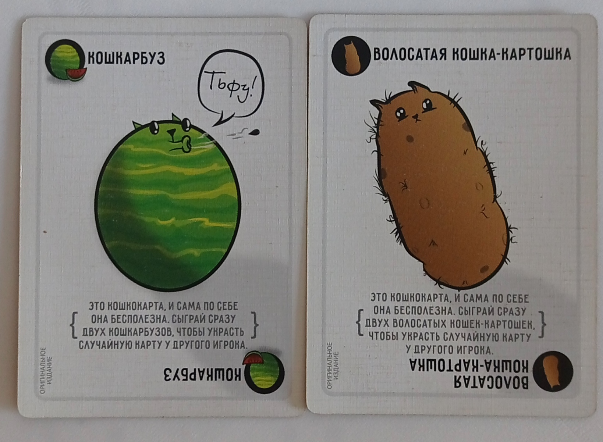
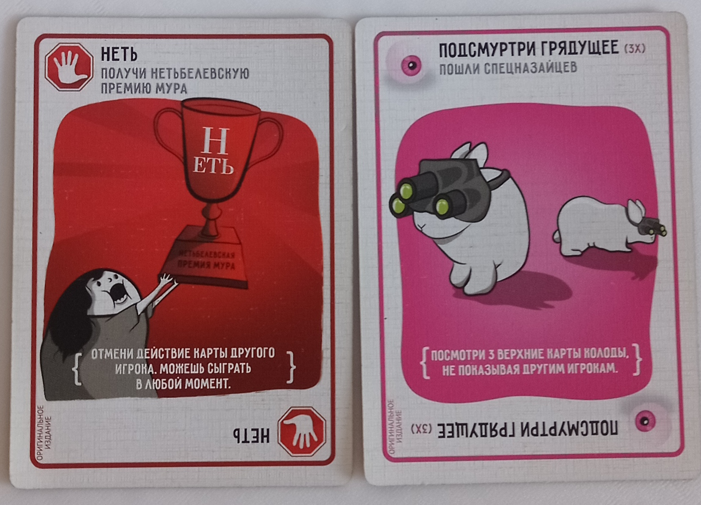

Взрывные котята
«Взрывные котята» — это карточная соревновательная настольная игра для 2–5 человек. Она крайне проста и динамична, но это не мешает ей быть очень увлекательной. Подходит для разогрева или когда у вас осталось мало времени. В целом по динамике напоминает UNO. Рекомендуется всем.
как проходит игра
Сначала вытащите все карты с типом «Обезвредь» и «Взрывной котенок». После этого перетасуйте колоду и раздайте каждому игроку по семь карт. Затем
дайте каждому игроку одну карту «Обезвредь», а оставшиеся карты «Обезвредь» удалите из игры. Если вы играете вдвоем или втроем, добавьте две лишние карты «Обезвредь»
к основной колоде. Далее добавьте к колоде карты «Взрывной котенок»; их количество должно составлять X – 1, где X — число игроков. После этого перетасуйте
колоду и поставьте её на центр стола. Определите, кто ходит первым, и начинайте игру. В свой ход игрок может разыграть карты из своей руки, если захочет
(о том, что могут делать эти карты, я расскажу позже). Чтобы завершить свой ход, игрок должен взять одну карту из колоды в свою руку. Но если ему попадётся
карта «Взрывной котенок», он должен обезвредить её картой «Обезвредь». Если игрок этого не сделает, он потеряет ход и проиграет. Если же вы использовали
карту «Обезвредь», сбросьте её, а карту «Взрывной котенок» верните в колоду так, как вам удобно, можно даже положить её сверху колоды. Игра завершается,
когда все игроки, кроме одного, потерпят поражение от взрыва. Последний оставшийся участник объявляется победителем.
элементы игры и правила
игровое поле
Ваш стол и колода карт. Если я скажу, что я в заложниках, мой надзиратель проведёт моё лицо по клавиатцтуашцуаштцштуасрну.
обычные карты

Обычные карты: если собрать две таких одинаковых карты, можно украсть у любого игрока карту, но только вслепую. Если собрать три одинаковых карты,
можно выбрать игрока и попросить у него любую карту. Если она есть в его руке, он обязан отдать вам запрошенную карту. Если у него нет в руке требуемой
карты, он ничего не отдаёт. Если вы собрали комбинацию из пяти разных обычных карт, вы можете взять любую карту из стопки сброса. Примечание: комбинации
из обычных карт собираются в вашей руке, и вы их показываете только тогда, когда они собраны. Когда вы используете эффект от комбинации, вы сбрасываете
все карты из этой комбинации.
особые карты

Особые карты — это те карты, которые игрок может разыграть перед тем, как возьмёт карту. Я не буду объяснять, что делает каждая карта, поскольку всё уже
написано на них.
Остальные, более глубокие механики игры мы уже разберём по ходу геймплея за столом. :3